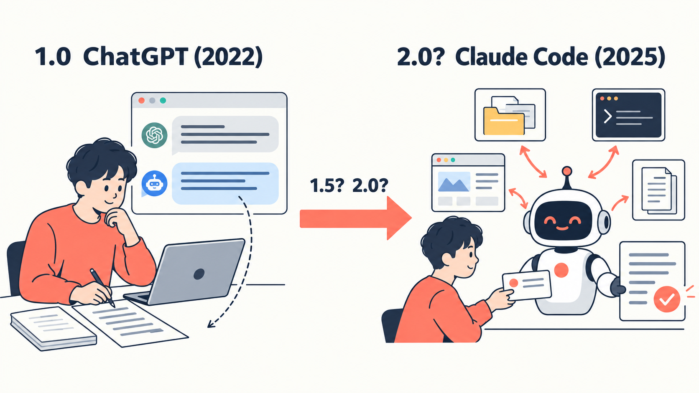
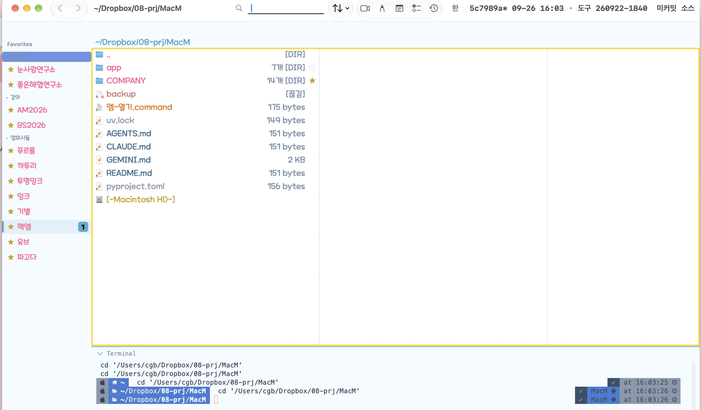
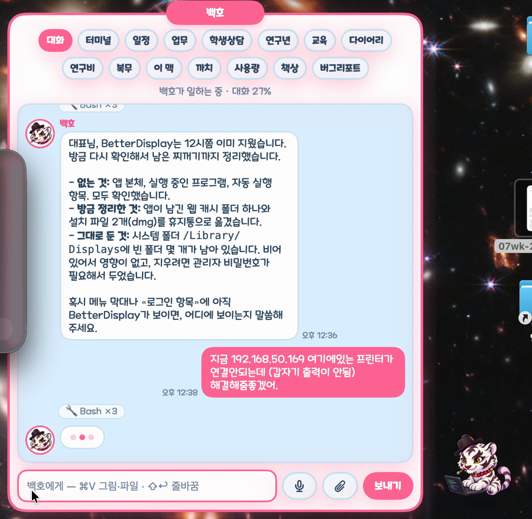
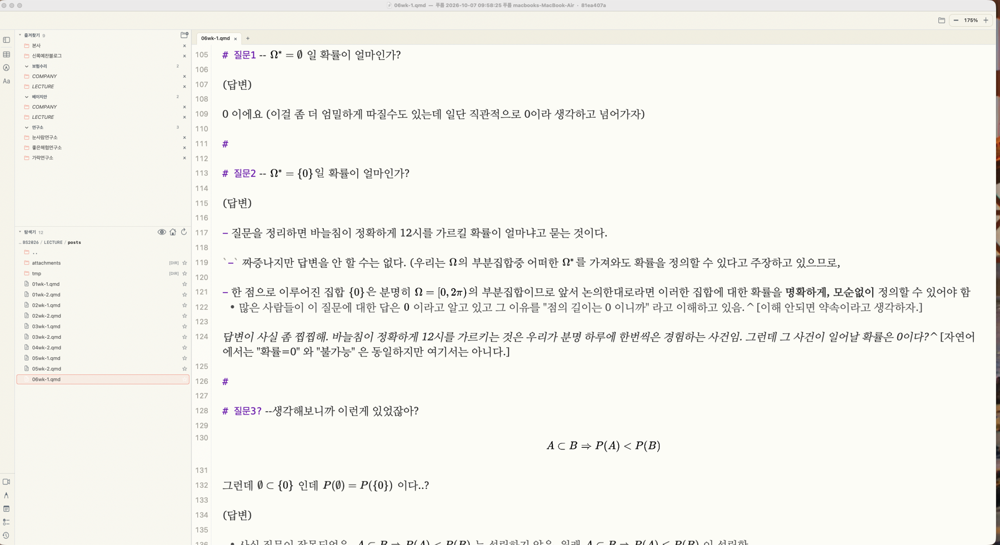
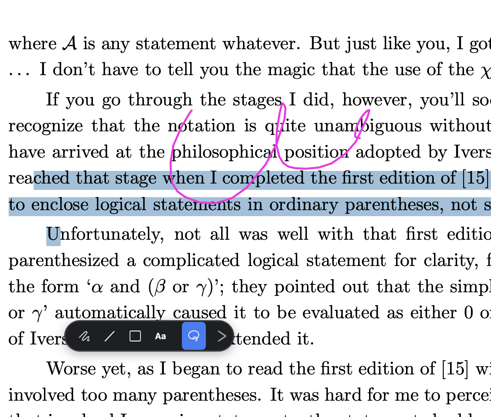

숭실대학교 G-LAMP사업단 교육워크숍
전북대학교 통계학과
2026-10-26

(그림은 ChatGPT 가 그려줌)
App1: 맥엠 — 폴더와 터미널을 한 창에

App2: 백호 · 까투리 — 에이전트에게 일 맡기는 비서 앱 (영상)

App3: 푸름 · 이슬 — md 편집기

App4: 잉크 · 투명잉크 — 그림판(맥용) · 강의용 필기 앱

감사합니다.